RAŠTO DARBO RENGIMAS
Įtraukos ir tarpai tarp eilučių
1 žingsnis iš 13
Pasirenkate pastraipą, kurią norite redaguoti (arba tuščią lapo erdvę, kur kursite pastraipą)
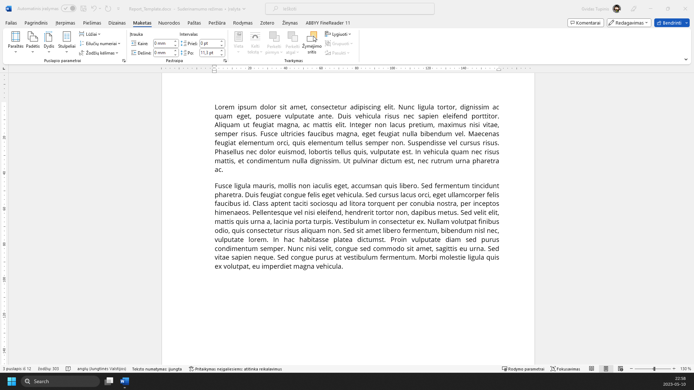
Pasirenkate meniu ‘Maketas’
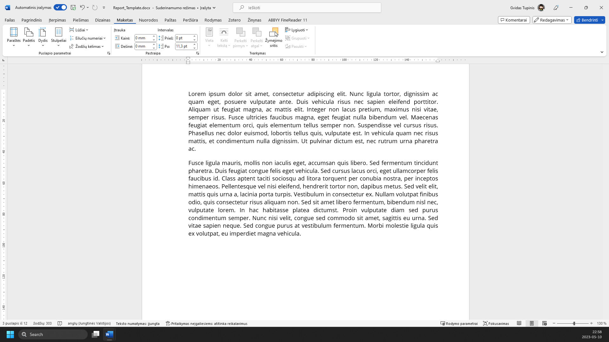
Įrankių juostoje pasirenktate ‘Pastraipa...’ (Pastraipos parametrai rodyklė)
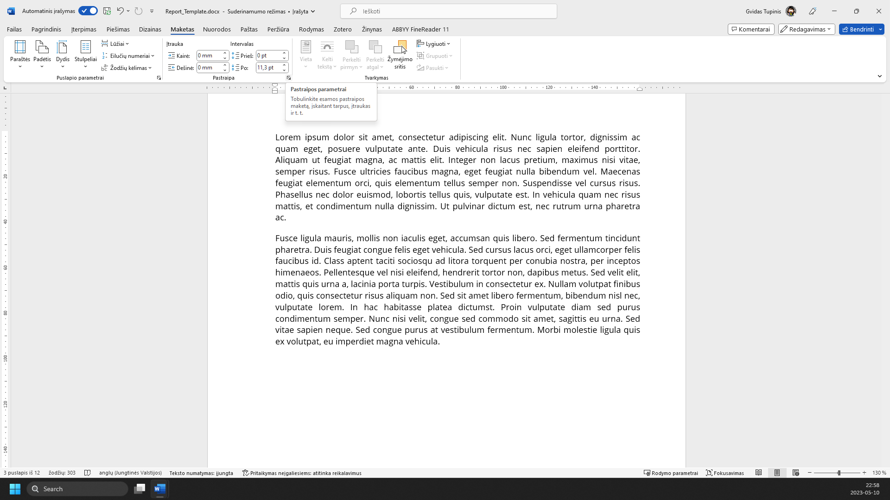
Paspaudžiate ant meniu ‘Lygiuotė:’
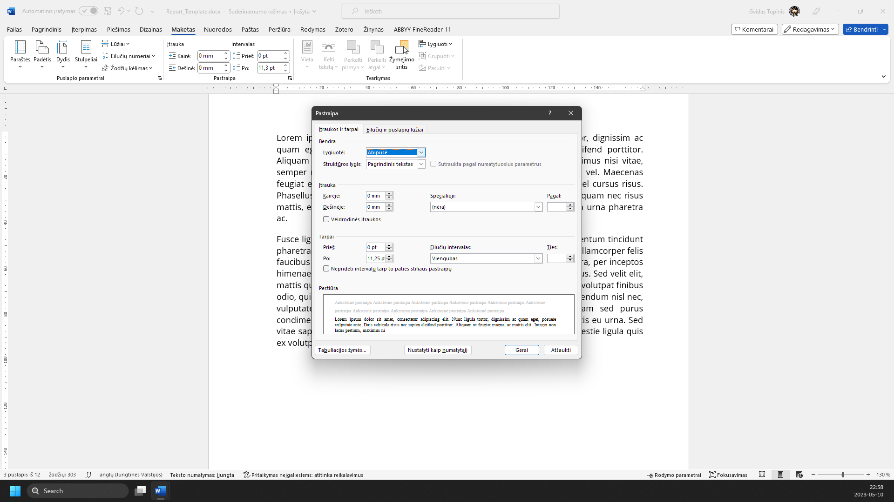
Pasirenkate ‘Abipusė’
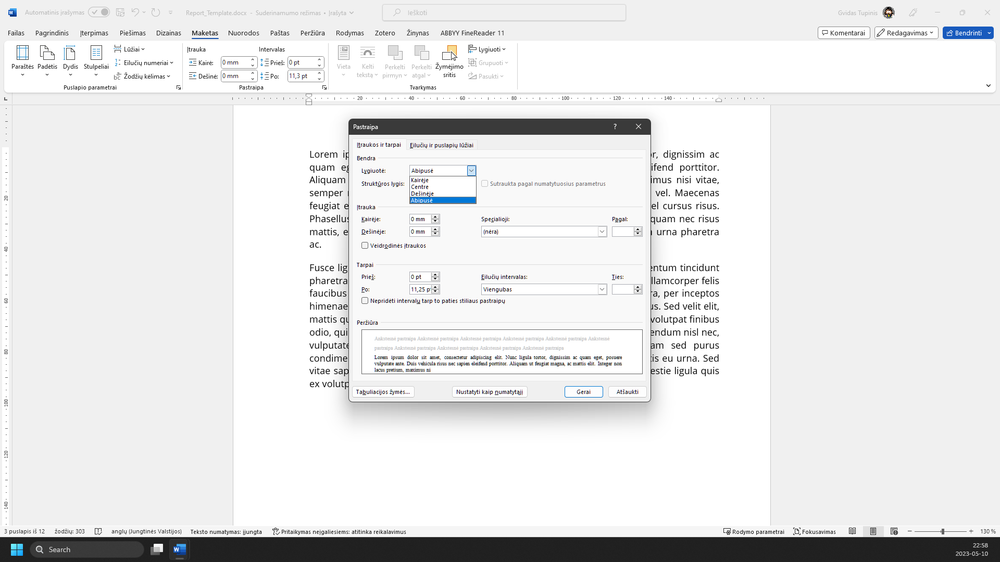
Atidarote meniu ‘Specialioji:’
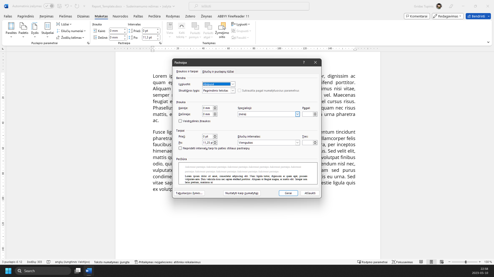
Pasirenkate ‘Pirmoji eilutė’
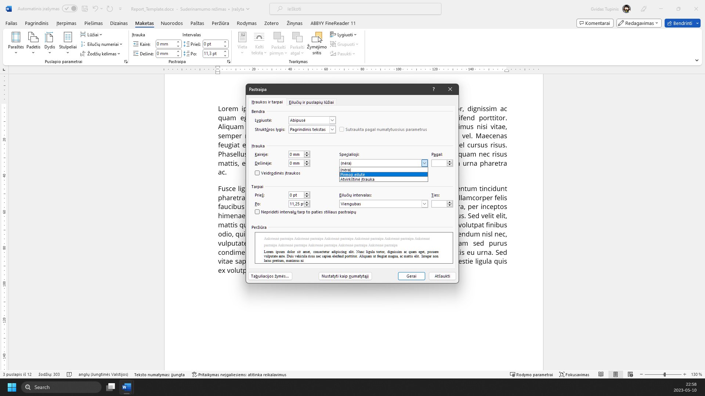
Įvedate 12mm
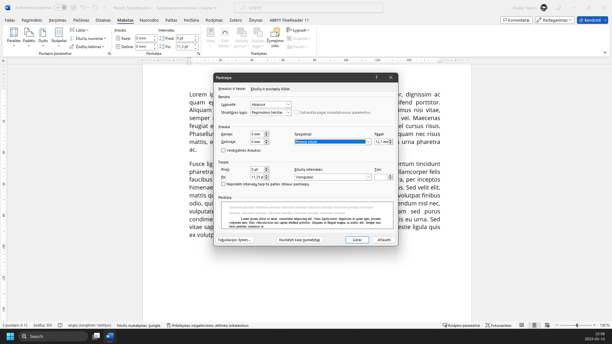
Atidarote meniu ‘Eilučių intervalas:’
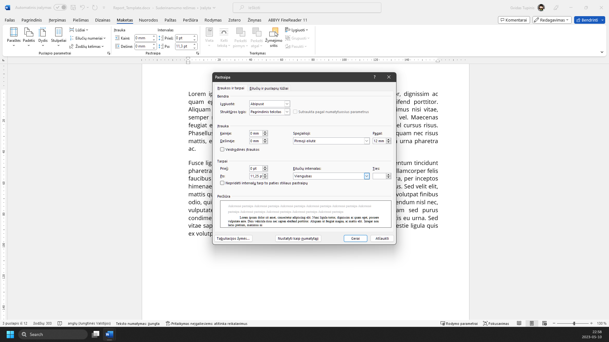
Pasirenkate ‘1,5 eilutės’
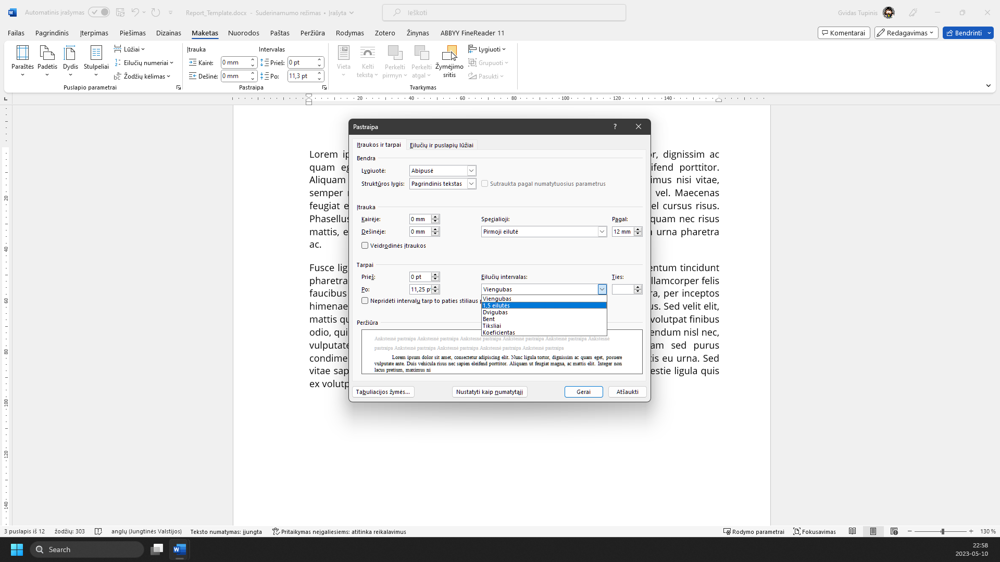
Įvedate tarpus po pastraipų: 12pt
Spaudžiate mygtuką ‘Gerai’
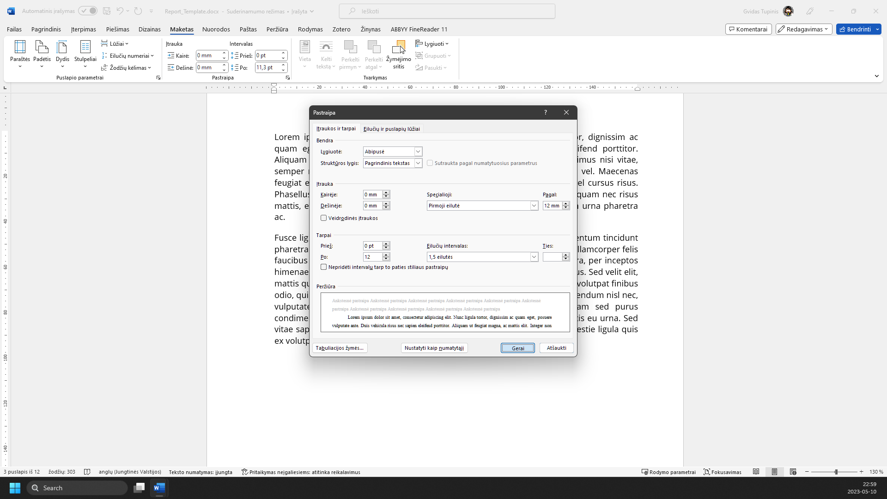
Pastraipa sumaketuota pagal reikalavimus
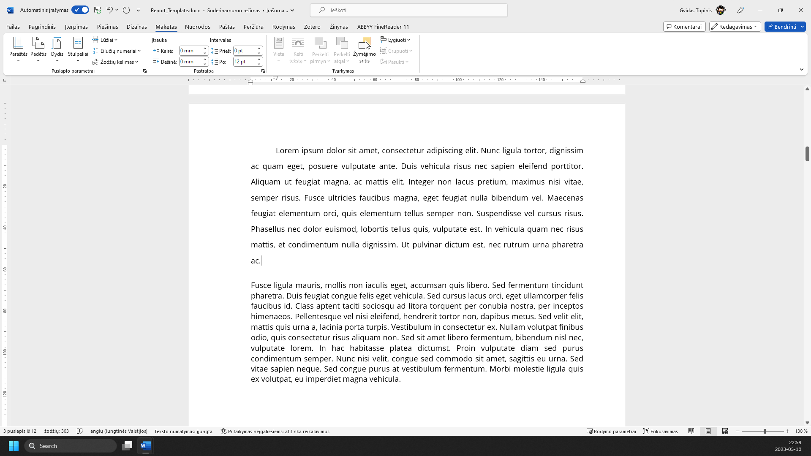
Žaliai apibrėžta vieta rodo, kur paspausti. Vaizdą gali padidinti naršyklės mastelio valdikliu. Žingsnius taip pat keičia klaviatūros rodyklės.